Các Bước Làm Thiết Kế Đồ Họa Chuyển Động 60fps Bằng Remotion & Thực Chiến Từ File Mẫu Pinterest
Tài liệu này hệ thống hóa toàn bộ các bước làm biến ý tưởng, ảnh chụp màn hình và video mẫu trên Pinterest thành đồ họa chuyển động sắc nét ở tốc độ 60 khung hình/giây (60fps) bằng Remotion + Claude Code. Phần đầu giải mã chi tiết từng bước câu lệnh xuất hiện trên màn hình trong các bước làm của Matt Loui; phần tiếp theo trình bày trực tiếp các bước mổ xẻ từ file gốc pinterest_ref.mp4 sang trọn bộ 3 định dạng video mang bảng màu thương hiệu cá nhân của anh Việt (Đen Obsidian – Trắng Kem – Vàng Gold).
I. Nền Tảng Kỹ Thuật: Vì Sao Phải Render Bằng Remotion 60fps Trên Nhân Trình Duyệt?
1.1. Sự khác biệt giữa Vẽ Điểm Ảnh 30fps và Nội Suy Tọa Độ Thực Sub-Pixel 60fps
Khi tạo đồ họa chuyển động có chứa chữ viết, con số và giao diện phần mềm, các mô hình sinh video bằng điểm ảnh (như Sora, Runway hay Veo) thường làm nhòe nét chữ hoặc sai lệch số liệu. Ngược lại, nếu dùng thư viện vẽ ảnh tĩnh thông thường trong Python (như PIL/OpenCV ở mức 30fps), mọi tọa độ vị trí bị ép về số nguyên (int). Khi khung hình dịch chuyển chậm hoặc phóng to nhẹ, hình ảnh sẽ bị giật từng nấc 1 pixel và thiếu độ mượt quang học.
translate3d(x, y, z), scale() và hệ trục không gian 3 chiều perspective(1200px), loại bỏ hoàn toàn hiện tượng khựng bậc thang.1.2. Điểm Mấu Chốt Cốt Lõi: Câu Lệnh Mở Khóa Chế Độ Hỏi Ngược Của AI
Trong mọi câu lệnh của các bước làm này, câu cuối cùng luôn là:
Ask me as many questions as you need to nail a really cool motion animation.Khi không có câu này, AI sẽ tự đoán màu sắc, tự đoán tốc độ nhanh/chậm và viết code ngay lập tức, dẫn đến kết quả chung chung. Khi đưa câu lệnh này vào, công cụ lập trình chuyển sang trạng thái Khảo sát yêu cầu thông qua bảng trắc nghiệm 4 mục (Style, Pacing, Colors, Length), giúp người dùng chốt chính xác chất liệu 3D phát sáng, thời lượng và bảng màu trước khi dòng code đầu tiên được viết ra.
II. Giải Mã Đầy Đủ Các Bước Có Prompt Trên Màn Hình Video Gốc (Input + Prompt → Output & Vì Sao)
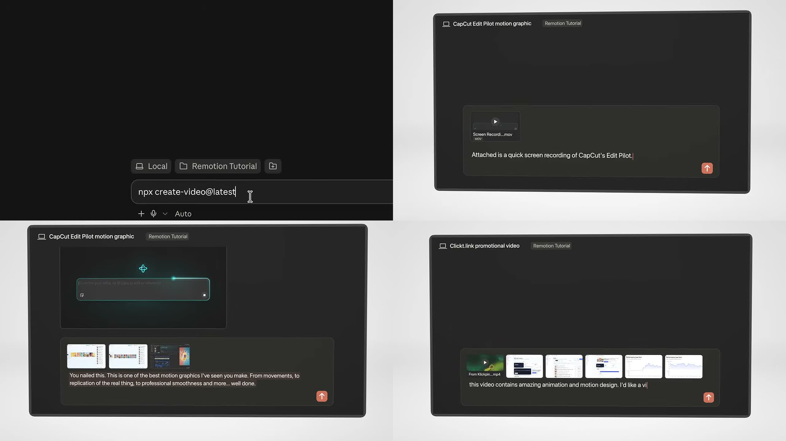
Ảnh chụp trực tiếp từ màn hình thao tác Claude Code của Matt Loui qua các bước khởi tạo và nhập câu lệnh.
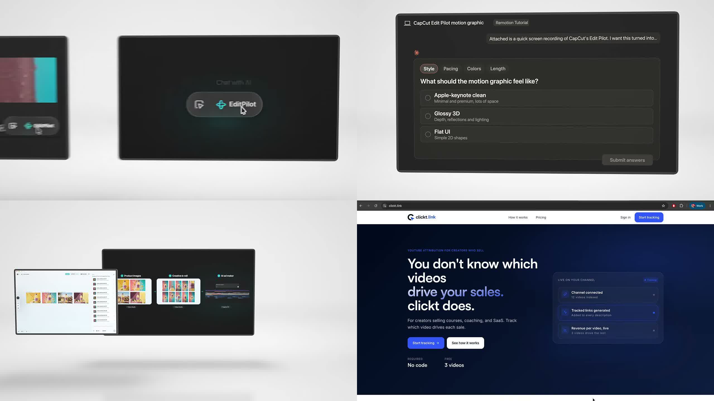
Cách kết hợp file quay màn hình, ảnh chụp tĩnh, bảng câu hỏi 4 Tab và 3 bước chỉnh sửa cuối trong CapCut.
Bước 0: Cài Đặt & Khởi Tạo Dự Án Remotion Trong Claude Code (Phút 02:17 – 03:19)
nodejs.org.2. Mở ứng dụng Claude Desktop → chuyển sang tab Claude Code (không dùng cửa sổ chat thông thường vì cửa sổ chat không có quyền tạo file và chạy trình kết xuất video trên máy).
3. Chọn thư mục làm việc trên máy tính và gõ lệnh khởi tạo. Khi được hỏi có cài đặt bộ kỹ năng Remotion AI Skills không, bấm chọn Yes.
remotion-dev/skills).Vì sao? Bộ kỹ năng này cung cấp quy chuẩn viết hàm nội suy
interpolate() và spring() chuẩn xác để AI tạo ra video 4K từ mã nguồn giao diện mà không gặp lỗi cú pháp.Lệnh gõ trên màn hình (Phút 02:51):
npx create-video@latest
# Hoặc nếu đã có sẵn thư mục dự án, cài thêm bộ kỹ năng Remotion bằng lệnh:
npx skills add remotion-dev/skills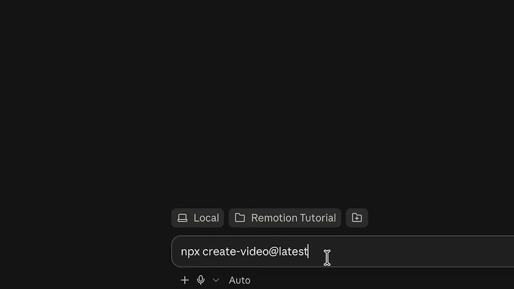
Bước 1 (Phương Pháp 1 — "Record It"): Biến Đoạn Quay Màn Hình Thành Đồ Họa Chuyển Động (Phút 03:22 – 05:03)
Screen Recording) khoảng 5–10 giây cảnh con trỏ chuột bấm vào nút Edit Pilot và gõ chữ vào thanh công cụ.2. Kéo thả file video quay màn hình đó vào cửa sổ Claude Code kèm câu Prompt số 1.
3. Bấm chọn phong cách
Glossy 3D trong bảng câu hỏi 4 mục hiện ra.Screen Recordi...mov): Quay cận cảnh góc màn hình tối màu của CapCut, nơi con trỏ chuột bấm vào nút tròn có chữ Edit Pilot màu xanh ngọc → nút bung rộng ra thành thanh nhập liệu ngang → người dùng gõ câu lệnh rồi bấm nút mũi tên gửi đi.Edit Pilot ở chính giữa được con trỏ chuột bấm vào, bung mượt ra thành thanh nhập liệu, chữ tự động gõ từng ký tự và phát sáng khi bấm nút gửi.Vì sao ra được như vậy?
• Nhờ file quay màn hình: AI nhìn thấy chính xác hình dáng biểu tượng 4 cánh, mã màu xanh ngọc và thứ tự chuyển trạng thái từ nút nhỏ sang thanh ngang của phần mềm thật.
• Nhờ cụm từ "Use the same design": Giữ đúng giao diện gốc nhưng lược bỏ toàn bộ các chi tiết thừa xung quanh để đặt thanh công cụ nổi bật ở chính giữa.
• Nhờ câu hỏi làm rõ: Mở ra lựa chọn
Glossy 3D, giúp AI thêm khung bo góc phát sáng neon và bóng gương phản chiếu bên dưới.Nguyên văn Prompt trên màn hình (Phút 03:54):
attached is a quick screen recording of CapCut's Edit Pilot. I want this turned into a cool motion graphic. Use the same design but animate it using remotion. Ask me as many questions as you need to nail a really cool motion animation.Dịch nghĩa: "Đính kèm là đoạn quay màn hình nhanh tính năng Edit Pilot của CapCut. Tôi muốn biến nó thành một đồ họa chuyển động thật ngầu. Hãy giữ nguyên thiết kế giống như vậy nhưng làm hoạt hình bằng Remotion. Hãy hỏi tôi bao nhiêu câu hỏi tùy thích để làm ra một hoạt ảnh thật xuất sắc."
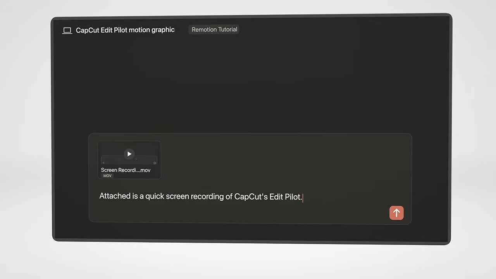
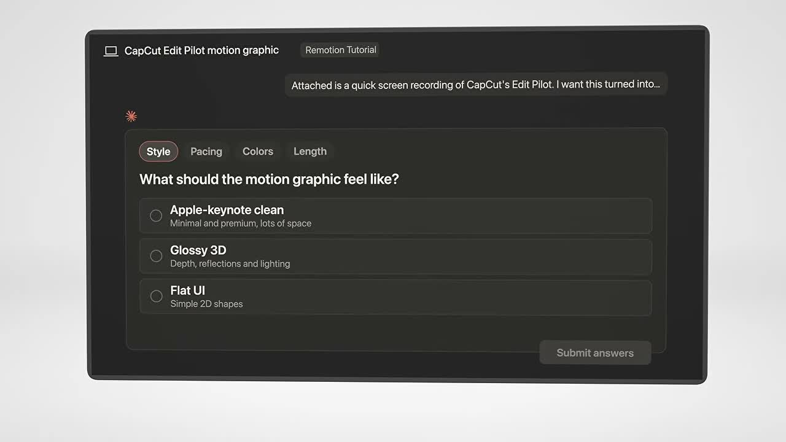
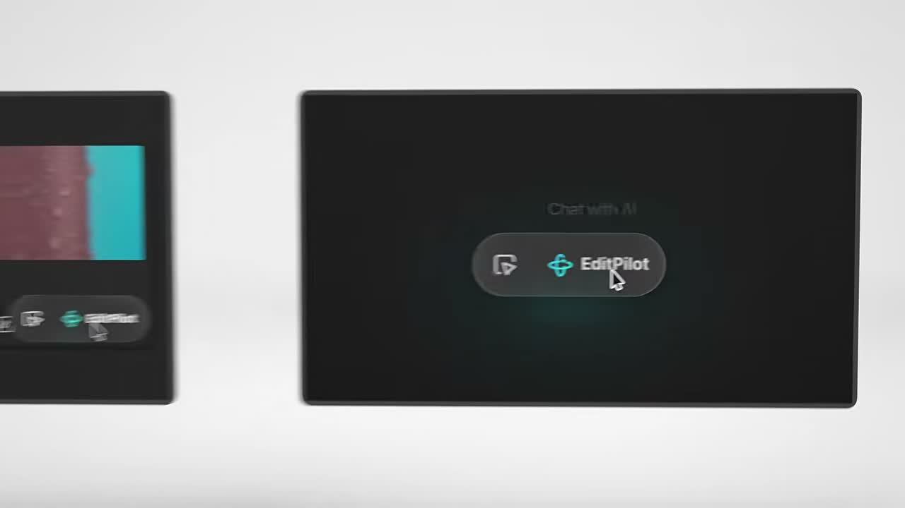
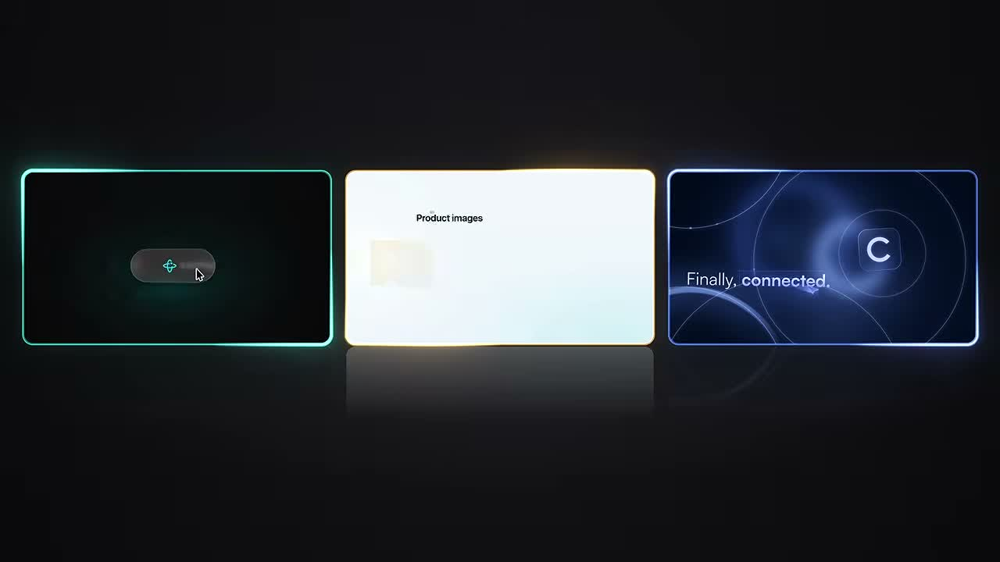
Bước 2 (Phương Pháp 2 — "Screenshot It"): Biến 3 Ảnh Chụp Màn Hình & Kịch Bản Lời Nói Thành Sơ Đồ Các Bước Làm (Phút 05:04 – 05:54)
2. Chụp 3 tấm ảnh màn hình tĩnh ứng với 3 công đoạn trong bài hướng dẫn.
3. Đính kèm 3 tấm ảnh vào khung chat + dán đoạn kịch bản lời thoại (
My script is this...) + yêu cầu tạo sơ đồ các bước làm đánh số.Product images).• Ảnh 2: Giao diện nền trắng của CapCut Video Studio đang tạo thêm hàng video dọc minh họa (
Creative b-roll).• Ảnh 3: Giao diện nền tối của Thanh Cắt Ghép phần mềm CapCut PC khi đã đưa toàn bộ ảnh và video vào cắt dựng (
AI ad maker).Vì sao ra được như vậy?
• Nhờ làm chung cửa sổ chat cũ + câu khen đầu câu lệnh: AI giữ nguyên kiểu khung bo góc có viền phát sáng neon và bóng phản chiếu mặt sàn giống Bước 1.
• Nhờ đưa kịch bản lời nói: AI đọc lời thoại và tự động chia đúng 3 nhãn tiêu đề khớp 100% với những gì người nói đang đọc.
• Nhờ 3 tấm ảnh chụp màn hình thật: AI tái tạo lại đúng bố cục 4 tấm ảnh ngang, 7 tấm ảnh dọc và thanh thanh cắt ghép từ ảnh thật đưa vào chuyển động.
Nguyên văn Prompt trên màn hình (Phút 05:40):
You nailed this. This is one of the best motion graphics I've seen you make. From movements, to replication of the real thing, to professional smoothness and more... well done.
I want to create another motion animation for the same editing project. My script is this:
In this capcut pc tutorial I'll show you how to generate product images and creative b-roll in the same spot, it's capcut's video studio. Then we're going to take all of this into capcut pc as ai ai ad maker.
I've attached some screen shots of video studio (the image gen and b-roll). I've also attached an image of our capcut time-line.
Ideally, the animation shows the flow of the video. Perhaps a numbered list? Or a synopsis workflow?
Ask me questions so we can get this animation looking solid.Dịch nghĩa: "Bạn làm chuẩn lắm. Đây là một trong những đồ họa chuyển động đẹp nhất tôi từng thấy bạn tạo ra. Từ chuyển động, độ giống bản thật, cho đến độ mượt chuyên nghiệp... làm rất tốt. Tôi muốn tạo thêm một hoạt ảnh nữa cho cùng dự án dựng phim này. Kịch bản của tôi như sau: 'Trong hướng dẫn CapCut PC này, tôi sẽ chỉ bạn cách tạo ảnh sản phẩm và B-roll sáng tạo ở cùng một nơi là CapCut Video Studio. Sau đó chúng ta sẽ đưa tất cả vào CapCut PC với AI Ad Maker.' Tôi có đính kèm vài ảnh chụp màn hình của Video Studio (phần tạo ảnh và B-roll) cùng ảnh chụp thanh cắt ghép CapCut. Lý tưởng nhất là hoạt ảnh thể hiện được luồng đi của video. Có thể là danh sách đánh số? Hoặc sơ đồ tóm tắt các bước làm? Hãy hỏi tôi các câu hỏi để chúng ta làm cho hoạt ảnh này thật chất lượng."
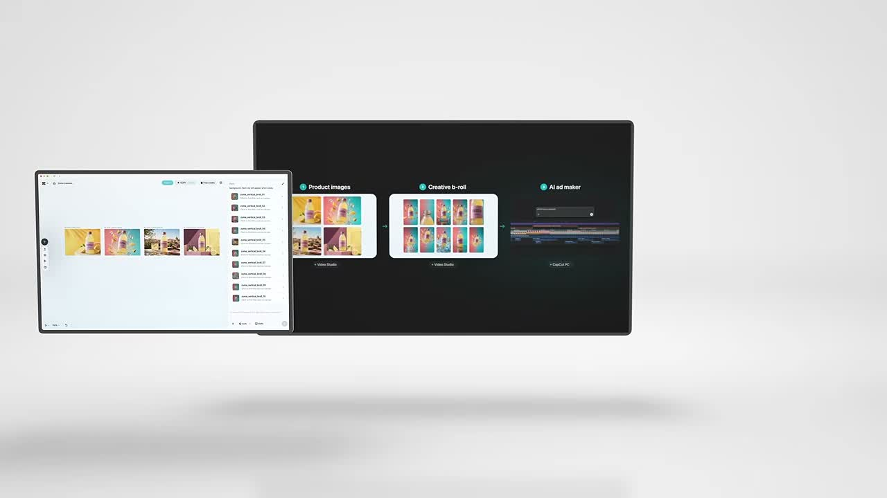
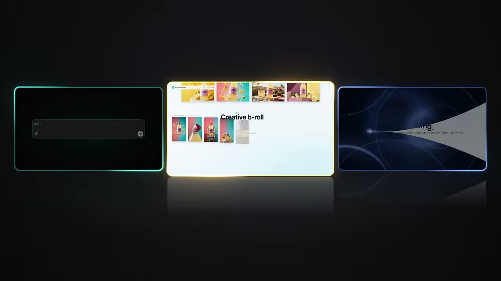
Bước 3 (Phương Pháp 3 — "Reference It"): Kết Hợp Video Mẫu Pinterest + 5 Ảnh Chụp Giao Diện Thành Video Quảng Cáo 25 Giây (Phút 05:55 – 08:14)
"motion typography animation", tải mẫu video chuyển động ưng ý nhất về máy thành file .mp4.2. Đăng nhập vào phần mềm/website riêng (
clickt.link), chụp 5 tấm ảnh màn hình từ trang chủ đến các bảng biểu đồ bên trong trang quản trị.3. Mở cửa sổ Claude Code mới, đính kèm 1 video mẫu Pinterest + 5 tấm ảnh chụp màn hình và gõ Prompt số 3.
From Klickpin...mp4): Video mẫu Pinterest màu xanh lục chứa các chuyển động: vòng tròn quỹ đạo giao nhau (Sketch), tia kiếm cắt mở màn hình, chữ xếp tầng và bảng điều khiển Bento 3D.• File 2 đến File 6 (5 tấm ảnh chụp
clickt.link): Ảnh trang chủ nền xanh đen, ảnh bảng điều khiển chính (3 thẻ Revenue US$5,543, Tracked Clicks 10.9k, Conversion Rate 4.4%), ảnh danh sách video YouTube gắn link theo dõi, và 2 ảnh biểu đồ đường tăng trưởng doanh thu.clickt.link.Vì sao ra được như vậy?
• Video Pinterest làm "Khuôn chuyển động" (Motion Reference): Thay vì phải mô tả bằng lời văn cách vẽ từng vòng tròn hay góc nghiêng camera, AI nhìn video mẫu để lấy cấu trúc nhịp điệu và kiểu chuyển cảnh.
• 5 tấm ảnh chụp màn hình làm "Ruột thương hiệu" (UI & Brand Data): AI trích xuất đúng logo chữ C, màu xanh dương chủ đạo, phông chữ và các thẻ số liệu thật từ 5 tấm ảnh chụp để lắp vào bên trong khuôn chuyển động của Pinterest.
Nguyên văn Prompt trên màn hình (Phút 06:58):
this video contains amazing animation and motion design. I'd like a video like this for clickt.link
Ask me as many questions as you need in order to get this right. The final output should be 25 seconds. I'm also attaching some screenshots of clickt's internal interface (you can't access these, so they should help).Dịch nghĩa: "Video này chứa hoạt ảnh và thiết kế chuyển động rất đẹp. Tôi muốn một video giống như thế này cho clickt.link. Hãy hỏi tôi bao nhiêu câu hỏi tùy thích để làm chuẩn nhất. Đầu ra cuối cùng cần dài 25 giây. Tôi cũng đính kèm một số ảnh chụp màn hình giao diện nội bộ của Clickt (bạn không tự truy cập vào trong đó được, nên những ảnh này sẽ giúp ích)."
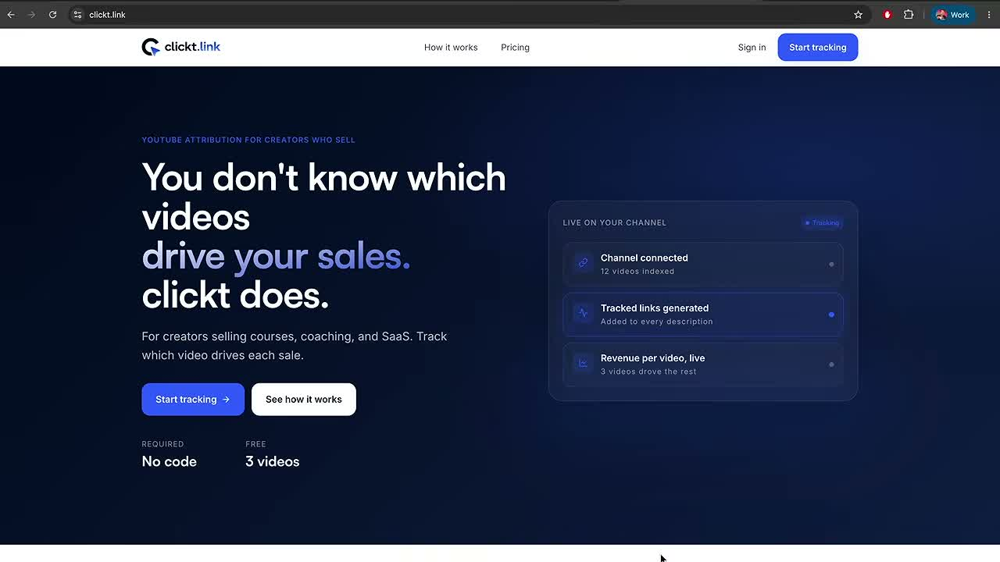
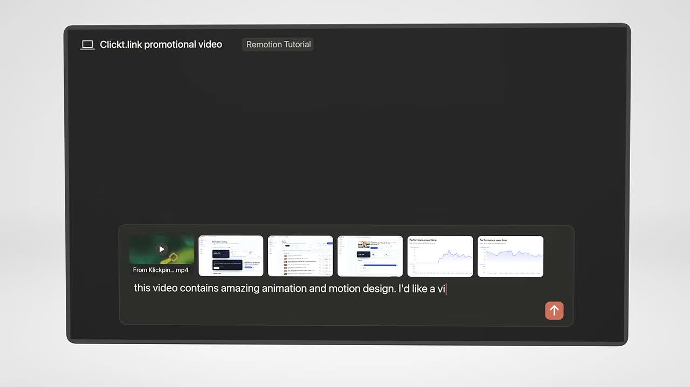
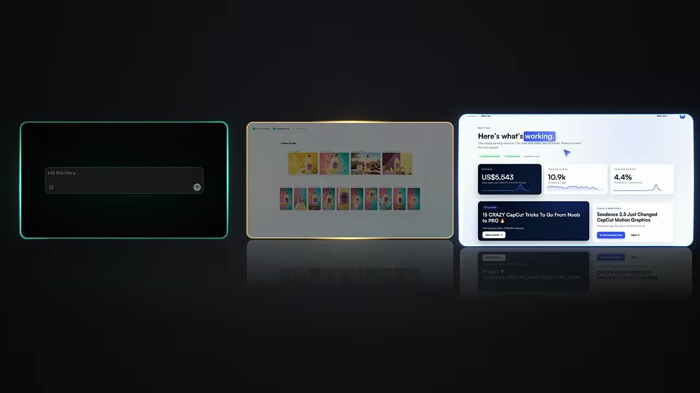
Bước 4 & 5: Lệnh Xuất Bản 4K & 3 Bước Chỉnh Sửa Cuối Quang Học Trong CapCut (Phút 08:20 – 14:36)
Sau khi kiểm tra chuyển động trong trình xem trước, Matt Loui yêu cầu xuất file 4K về máy tính bằng câu lệnh:
Please render a 4K copy onto my computerTiếp theo, để xóa bỏ cảm giác "cứng" của đồ họa máy tính, file MP4 4K được đưa vào CapCut thực hiện 3 bước hoàn thiện trong 5 phút:
| Bước chỉnh sửa cuối CapCut | Thao tác & Thông số kỹ thuật | Đầu ra đạt được & Nguyên lý thị giác |
|---|---|---|
5.1. Tán sắc rìa ống kínhChroma Quirk + Circle Mask Reverse |
• Kéo hiệu ứng Chroma Quirk phủ lên video.• Mở tab Mask → chọn Circle.• Kéo rộng vòng tròn ra sát mép khung hình, chỉnh Feather = 15.• Bấm nút Reverse (Đảo ngược mặt nạ). |
Đầu ra: Chữ và số liệu ở tâm màn hình nét 100%, chỉ có 4 góc ngoài cùng tách nhẹ viền màu RGB. Vì sao? Mô phỏng hiện tượng quang sai rìa ống kính máy quay, hướng mắt người xem tập trung vào vùng trung tâm. |
5.2. Làm mờ hướng tâm 4 gócRadial Blur 2 |
• Kéo hiệu ứng Radial Blur 2 đè lên thanh cắt ghép.• Chỉnh Glow = 0, Filter = 0.• Tăng nhẹ Strength và đẩy Size lên cao để dồn vùng mờ ra 4 góc. |
Đầu ra: Bốn góc ngoài cùng hơi nhòe hướng tâm nhẹ nhàng, không lấn vào vùng chữ ở giữa. Vì sao? Tạo độ sâu trường ảnh tự nhiên khi các thẻ giao diện trượt từ ngoài rìa vào giữa màn hình. |
5.3. Thiết kế âm thanh 3 lớp3-Layer SFX + Reverb 70% |
• Tắt chế độ tự hút thanh cắt ghép, xếp 3 tầng âm thanh: 1. whoosh: Đặt ở điểm lướt chuyển cảnh.2. UI (pop, click): Đặt ở điểm bấm chuột và thẻ nảy lên.3. line / draw: Đặt ở điểm vẽ đường kẻ hoặc thanh kiếm cắt ngang.• Quét chọn toàn bộ SFX → bật Reverb = 70% → kéo nhẹ Fade out ở đuôi mỗi file. |
Đầu ra: Mọi chuyển động nhỏ đều có âm thanh phản hồi êm ái, ngân vang trong cùng một không gian. Vì sao? Lớp vang Reverb 70% và Fade out giúp các tiếng động ngắn không bị ngắt cụt đột ngột và hòa quyện tự nhiên vào nhạc nền. |
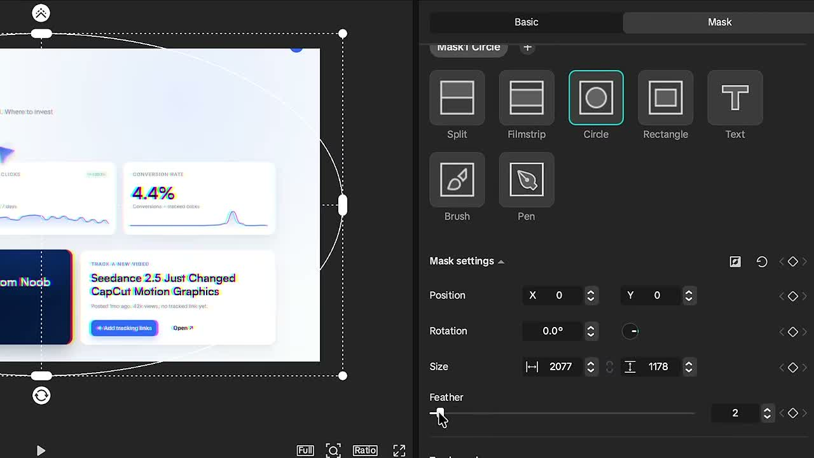
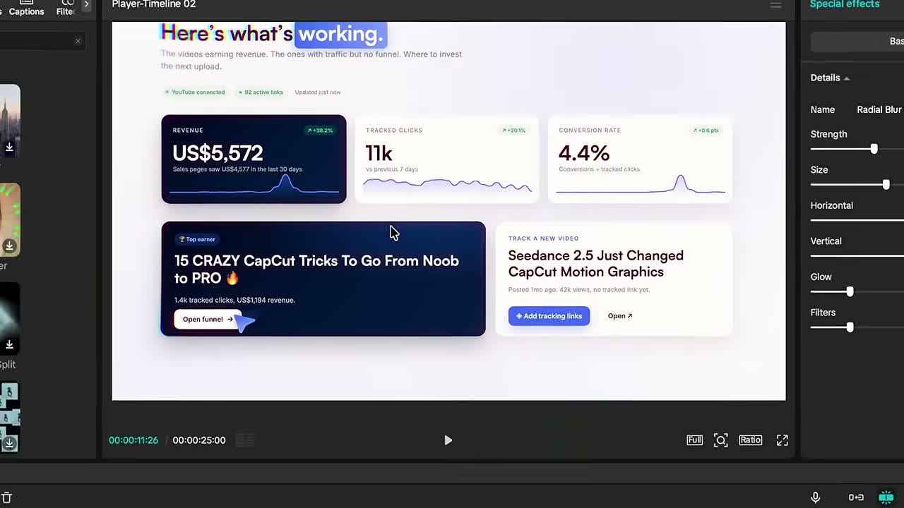
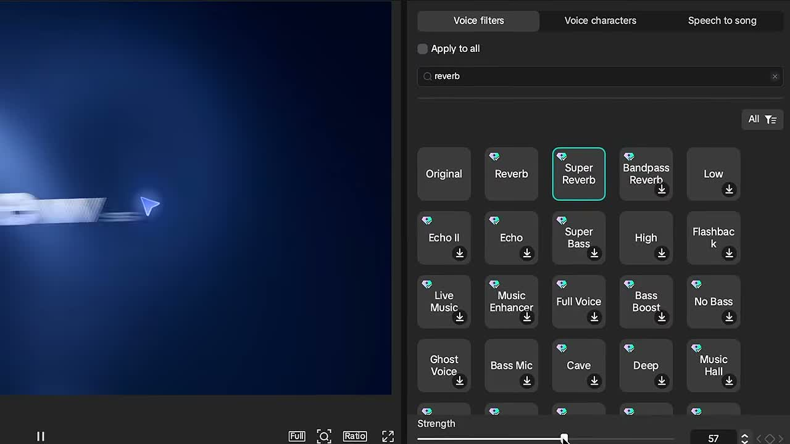
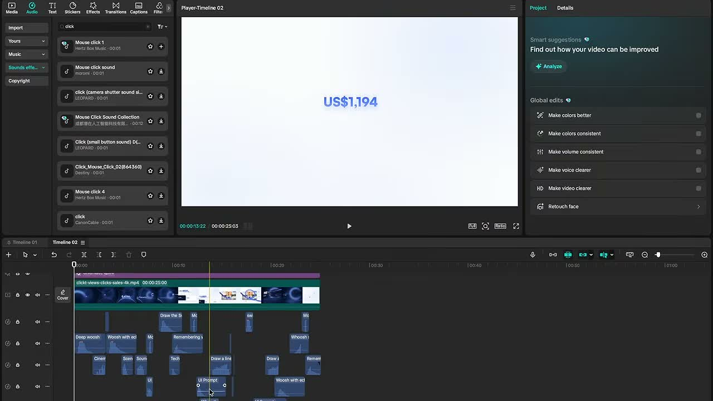
Bản Video Demo Thực Tế: Tái Hiện Đủ 3 Phương Pháp Của Matt Loui Ở 60fps
Bản dựng bằng Remotion Chromium GPU 60fps tích hợp sẵn hiệu ứng quang học rìa ống kính và 3 lớp âm thanh tự động: Cảnh 1 (0s–4s: Thanh Prompt Bar 3D), Cảnh 2 (4s–8s: Sơ đồ các bước làm 3 bước), Cảnh 3 (8s–12s: Bảng điều khiển SaaS & Tia kiếm cắt mở cảnh).
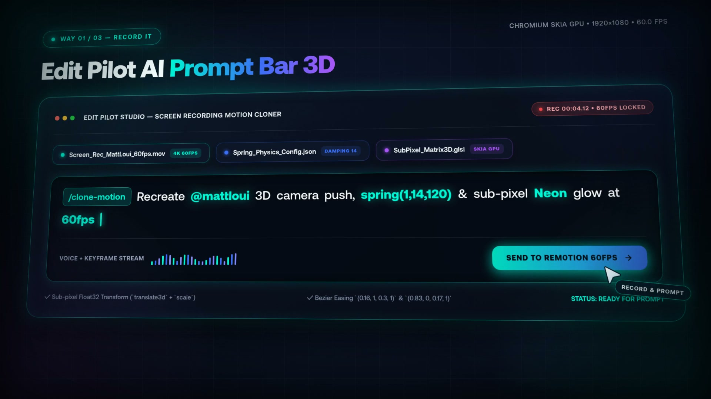
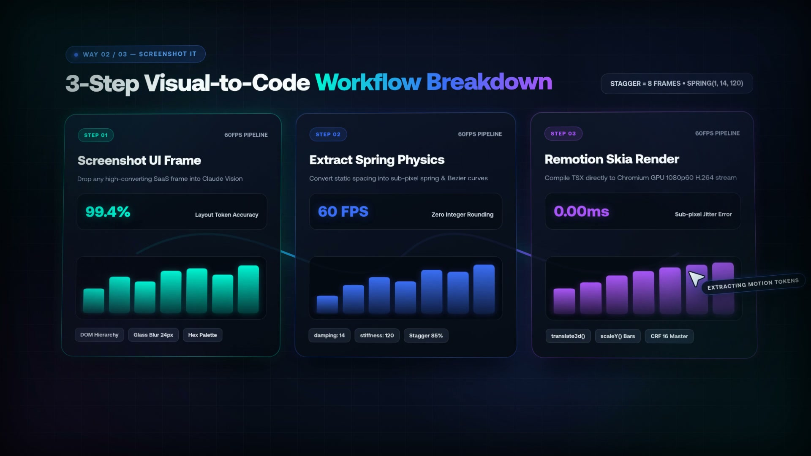
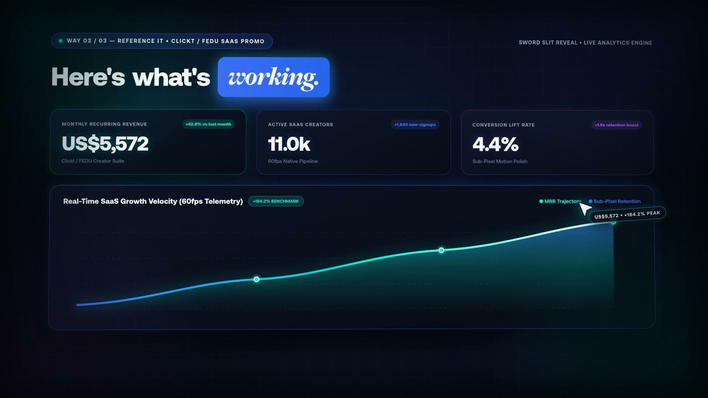
III. Các Bước Làm Thực Chiến: Từ File Mẫu Pinterest .MP4 Đến Bộ Video 60fps Thương Hiệu Anh Việt
3.1. Giải Phẫu File Video Mẫu Gốc Tải Từ Pinterest (pinterest_ref.mp4)
File mẫu gốc được Matt Loui sử dụng trong Bước 3 là một video Motion Typography tải từ Pinterest (https://www.pinterest.com/pin/333759022406800725/) với độ phân giải 736×414 @ 30fps, thời lượng 15 giây, mang tông màu Xanh Lục Bảo (#031F1A / #10B981 / #BEF264).
Video gốc tải trực tiếp từ Pinterest làm khuôn mẫu nhịp điệu và kỹ xảo chuyển cảnh.

Trích xuất 16 mốc thời gian để đo đạc chính xác vị trí chữ, quỹ đạo vòng tròn và góc nghiêng 3D.
3.2. Sáu Bước Kỹ Thuật Chuyển Hóa Từ File Mẫu .MP4 Sang Bộ Video 60fps Thương Hiệu Cá Nhân
pinterest_ref.mp4, chia tổng thời lượng 15.0 giây thành 6 phân cảnh bằng nhau (mỗi phân cảnh 2.5 giây = 150 frames ở tốc độ 60fps, tổng cộng 900 frames).• Quỹ đạo con trỏ: Dùng hàm đường cong Bézier bậc 3
cubicBezierPoint(t, P0, P1, P2, P3) để con trỏ lướt theo cung tròn mềm mại trước khi bấm.• Đàn hồi lò xo: Kết hợp
spring({ mass: 1, damping: 15, stiffness: 120 }) cho pha xuất hiện và Easing.bezier(0.83, 0, 0.17, 1) (IN_OUT_QUINT) cho pha chuyển cảnh.• Hệ 4 vòng quỹ đạo (Orbit Rings): Tính tọa độ hạt sao chổi chạy dọc chu vi bằng hàm lượng giác
Math.cos(angle) và Math.sin(angle) kèm đuôi phát sáng 18 hạt giảm dần kích thước.PinterestMotionClone.tsx): Dựng lại nguyên mẫu 100% nội dung tiếng Anh và màu Xanh Lục Bảo của video Pinterest nhưng nâng cấp từ 736×414 @ 30fps lên Full HD 1920×1080 @ 60fps để đối chiếu độ khớp chuyển động.VietBrandPinterestGold.tsx):1. Bảng màu: Chuyển sang Đen Obsidian (
#08090C) – Trắng Kem (#FAF8F5) – Vàng Gold (#F59E0B / #FACC15).2. Nội dung & Điểm nhấn: Chuyển 100% sang Tiếng Việt với phông chữ
SVN-Aeonik, lấy đại cảnh 4 Vòng Quỹ Đạo Vàng Gold + Sao chổi & nổ chữ "Điểm neo cảm xúc" làm tâm điểm.3. Thích ứng đa khung hình (
isPortrait): Tự động tính toán lại bố cục cho cả bản ngang 16:9 (1920×1080) và bản dọc 9:16 (1080×1920).yuva444p12le): Bật cờ transparentBg: true và alphaOverlayMode: true để kết xuất riêng hiệu ứng Vòng Quỹ Đạo Vàng Gold trên nền trong suốt 100%, phục vụ kéo thả đè trực tiếp lên video người nói trong CapCut.whoosh_deep, ui_click, laser_strike, glassy_ping) có sẵn Reverb khớp chính xác đến từng khung hình.3.3. Bảng Đối Chiếu Chi Tiết 6 Phân Cảnh: Từ Bản Mẫu Pinterest Sang Bản Thương Hiệu Tiếng Việt Vàng Gold
| Phân cảnh & Khung hình (60fps) | Bản gốc Pinterest (Màu Xanh Lục • Tiếng Anh) | Bản Thương hiệu Anh Việt (Đen – Trắng – Vàng Gold • Tiếng Việt) | Kỹ thuật lập trình trong Remotion |
|---|---|---|---|
Cảnh 10f – 150f(0.0s – 2.5s) |
Chữ "Everything starts with a..." + Khối elip màu vàng rơi xuống và con trỏ chuột bay vào bấm phát sóng. |
Chữ "Mọi video triệu view đều bắt đầu từ..." + Khối Vàng Gold rơi nảy đàn hồi & con trỏ chuột lướt đường cong vào bấm nổ sóng vàng. | spring() lệch nhịp từng từ (STAGGER = 5 frames) + cubicBezierPoint() điều khiển đường bay con trỏ chuột. |
Cảnh 2 (Tâm điểm)150f – 300f(2.5s – 5.0s) |
4 vòng tròn quỹ đạo giao nhau + Hạt sao chổi chạy dọc viền & nổ chữ "Sketch" tại tâm giao điểm. |
4 Vòng Quỹ Đạo Vàng Gold (Orbit Rings) giao nhau + Sao chổi Vàng (Comet Trail) & nổ chữ "Điểm neo cảm xúc" tại giao điểm. |
4 vòng SVG xoay ngược chiều nhau + 18 hạt sao chổi tính theo Math.cos/sin + phát sáng drop-shadow Vàng Gold. |
Cảnh 3300f – 450f(5.0s – 7.5s) |
Chữ "What if this could" + Thẻ kính 3D nghiêng & Tia kiếm ánh sáng (Sword Slit) chém ngang mở toang màn hình. |
Chữ "Nếu biến lời nói thành hình ảnh..." + Thẻ kính 3D viền Vàng Gold & Tia kiếm ánh sáng Vàng cắt đôi màn hình mở cảnh mới. | Hiệu ứng cắt hai nửa màn hình bằng clipPath: polygon(...) kết hợp tia sáng linear-gradient quét ngang trong 18 frames. |
Cảnh 4450f – 600f(7.5s – 10.0s) |
Chữ xếp tầng động học "GROWTH" (Echo Stack) + Vòng tròn mở rộng & Dải lụa xoắn 3D. |
Chữ xếp tầng động học "RA ĐƠN THẬT" + Vòng tròn Vàng Gold bung mở & Dải lụa 3D Đen – Vàng uốn lượn. | Nhân bản 5 lớp chữ lệch pha theo trục Y (Echo Stack) + đường cong SVG path chuyển động uốn lượn theo hàm Math.sin. |
Cảnh 5600f – 750f(10.0s – 12.5s) |
Vòng tròn "Design" thu phóng thành Bảng điều khiển Bento 3D (45%, 60%, 10°C, biểu đồ sóng Spline 100%). |
Vòng tròn "Thiết kế tự động" mở ra Bảng Điều Khiển 3D Đen – Vàng Gold (Nguyễn Việt • Creator Engine 60fps) với các thẻ Giữ chân 68%, Tỷ lệ chốt 92%, Tăng trưởng 100%. |
Không gian 3D perspective(1200px) rotateX(12deg) rotateY(-14deg) + hiệu ứng vẽ đường biểu đồ bằng strokeDashoffset. |
Cảnh 6750f – 900f(12.5s – 15.0s) |
Chữ "All crafted" → Kết màn "✳ Ready to grow?" với bông hoa 8 cánh xoay phát sáng. |
Chữ "Làm kỹ từng khung hình" → Kết màn "✳ Sẵn sàng làm chủ cuộc chơi?" kèm biểu tượng Sao Vàng 8 cánh xoay tâm. | Component vector GoldStarFlower 8 cánh xoay liên tục + thu phóng máy quay mượt về tâm kết thúc. |
IV. Trình Chiếu Trực Tuyến Trọn Bộ Các Bản Video Demo Cuối Cùng
4.1. Đối Chiếu Trực Diện: File Mẫu Pinterest Gốc (30fps) vs. Bản Dựng Lại Nguyên Mẫu Bằng Remotion (60fps)
Trước khi thay đổi sang bảng màu thương hiệu, video mẫu Pinterest được lập trình lại 1:1 bằng mã nguồn React/Remotion (PinterestMotionClone.tsx) để kiểm chứng độ chính xác của toàn bộ 6 phân cảnh ở độ phân giải Full HD 1920×1080 @ 60fps:
Bản tải về từ Pinterest: độ phân giải thấp (736×414), tốc độ 30fps.
Bản dựng lại bằng code Remotion: sắc nét từng đường vector ở 1080p, mượt 60fps kèm âm thanh 3 lớp.
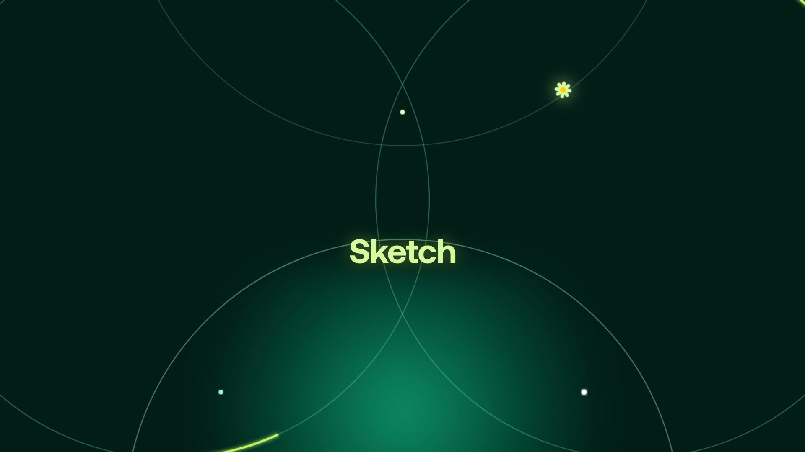
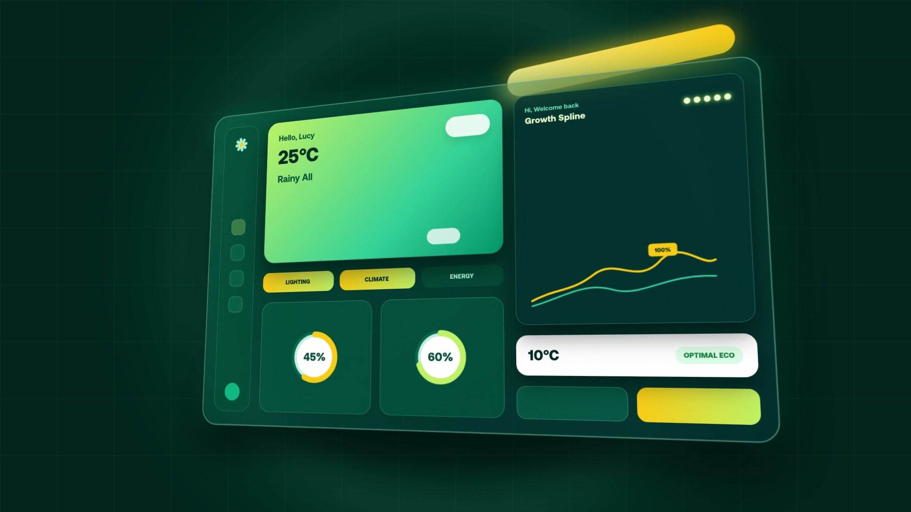
4.2. Bản Chính Thức Số 1 — Màn Hình Ngang 16:9 Thương Hiệu Anh Việt (Đen Obsidian – Trắng Kem – Vàng Gold • 100% Tiếng Việt @ 60fps)
Bản hoàn thiện dành cho video ngang YouTube, bài giảng khóa học và màn hình trình chiếu lớn, sử dụng bảng màu Đen Obsidian (#08090C) – Trắng Kem (#FAF8F5) – Vàng Gold (#FACC15 / #F59E0B):
File: viet_gold_16x9_60fps.mp4 — Điểm nhấn tại giây 02:50 với đại cảnh 4 Vòng Quỹ Đạo Vàng Gold + Sao chổi & nổ chữ "Điểm neo cảm xúc", nối tiếp bằng Tia kiếm ánh sáng Vàng và Bảng điều khiển 3D Nguyễn Việt Creator Engine.
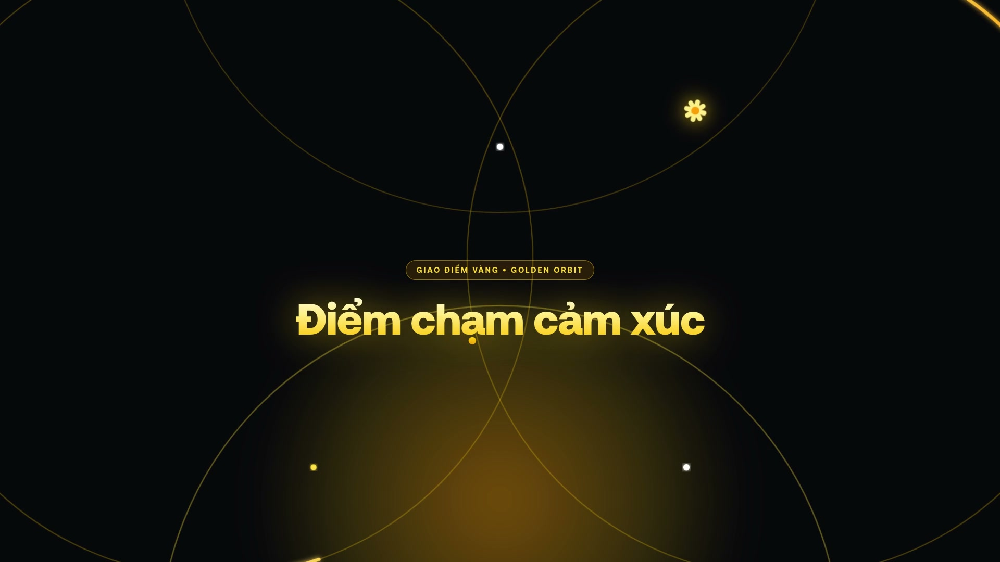
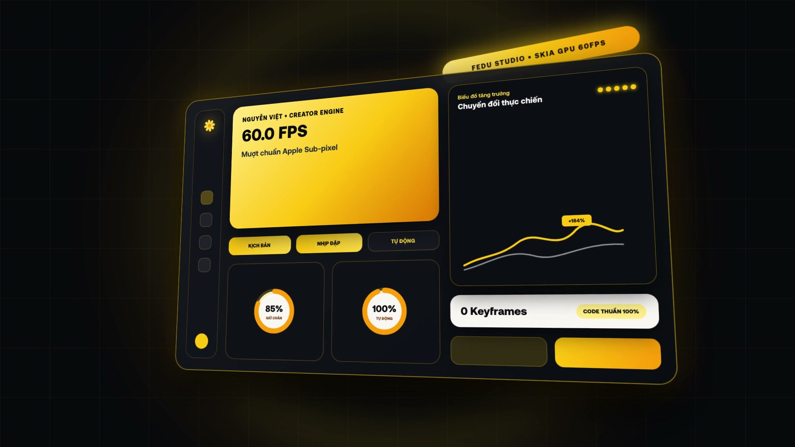
4.3. Bản Chính Thức Số 2 — Màn Hình Dọc 9:16 Dành Cho Reels, TikTok & CapCut Shorts (1080×1920 @ 60fps)
Không phải là bản cắt xén hai bên từ video ngang, bản dọc 9:16 được tính toán lại toàn bộ tọa độ khung hình theo chiều dọc: bán kính vòng quỹ đạo, cỡ chữ Tiếng Việt và khoảng cách các thẻ 3D đều nằm gọn trong vùng an toàn hiển thị của màn hình điện thoại.
File: viet_gold_9x16_60fps.mp4 — Sắp xếp gọn bố cục dọc 1080×1920 ở tốc độ 60fps.
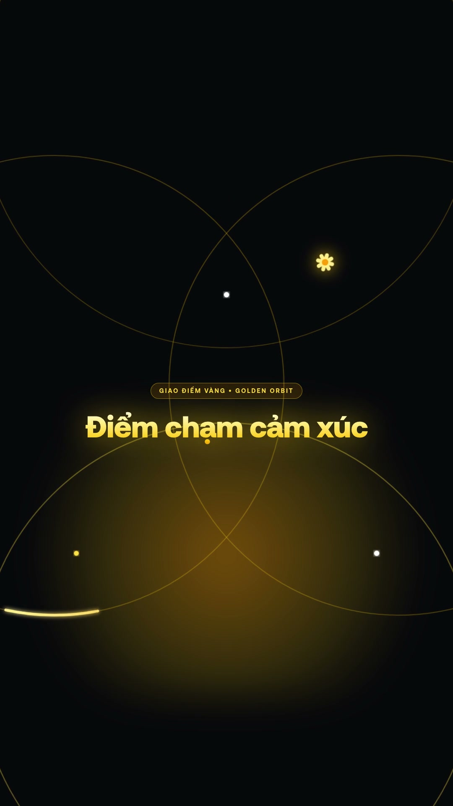
Cụm 4 vòng quỹ đạo và tiêu đề "Điểm neo cảm xúc" được căn giữa vùng nhìn chuẩn của điện thoại.
4.4. Bản Chính Thức Số 3 — Gói Lớp Phủ Nền Trong Suốt 100% (Apple ProRes 4444 Alpha Channel Cho CapCut)
Để người dựng phim có thể thả trực tiếp hiệu ứng 4 Vòng Quỹ Đạo Vàng Gold + Sao Chổi & Chữ "Điểm neo cảm xúc" đè lên trên lớp video quay người thật trong CapCut mà không cần dùng công cụ tách nền hay chế độ hòa trộn làm nhạt màu vàng, hệ thống đã xuất riêng gói video có kênh Alpha trong suốt:
Lưới ô vuông caro phía sau hiển thị xuyên qua video chứng minh nền đã được tách trong suốt 100% ngay từ nhân kết xuất Chromium GPU. Khi thả vào CapCut PC, chỉ có các vòng quỹ đạo vàng phát sáng và chữ hiển thị đè lên video gốc.
viet_gold_orbit_alpha_prores4444.mov (Định dạng Apple ProRes 4444, không gian màu yuva444p12le 12-bit kèm kênh Alpha trong suốt, tốc độ 60fps).remotion-studio/src/compositions/VietBrandPinterestGold.tsx• Bản Clone 1:1 Pinterest 60fps:
remotion-studio/src/compositions/PinterestMotionClone.tsx.mov đặt lên tầng Track 2 (lớp phủ trên video người nói ở Track 1) tại đúng câu thoại nhấn mạnh luận điểm. Không cần bật Chroma Key hay Blend Mode.